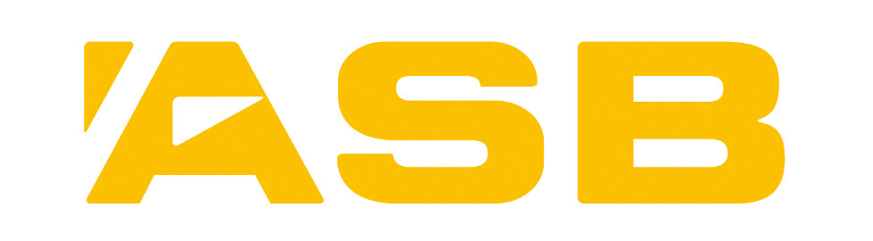

Hi,
My name is Joseph Lars Pratt. I'm from Denmark and live in New Zealand. I study Computer Science at the University of Auckland. I'm into technology, design and photography
Find me on Facebook and Instagram
Contact me at josephlars@hotmail.com
Collaborative Projects

Lassie
Microsoft Imagine Cup 2015
New Zealand 4th Place
A to B, worry free.
lassieapp.com

ASB
Microsoft Student Accelerator Program 2014/15
Innovation
asb.co.nz

MummaBird
Microsoft Imagine Cup 2014
The app revolution meets car safety
VTNZ
Microsoft Summer Student Programme 2013
Improving workflow and efficiency at VTNZ by utilising Microsoft technologies
vtnz.co.nz